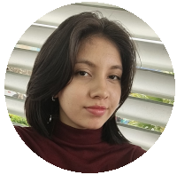
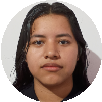
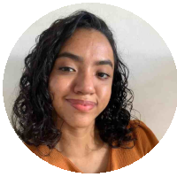
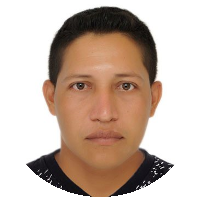
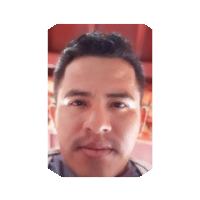

Sobre os pesquisadores
Bolsista 1
- Graduanda em Licenciatura em Matemática pelo Centro de Estudos Superiores de Tabatinga (CESTB) da UEA;
- Bolsista responsável pelo desenvolvimento do site do projeto, a partir de HTML, CSS e JavaScript.
Bolsista 2
- Graduanda em Licenciatura em Matemática pelo Centro de Estudos Superiores de Tabatinga (CESTB) da UEA;
- Bolsista responsável pelas coleta de dados e criação do livreto digital.
Bolsista 3
- Graduanda em Licenciatura em Matemática pelo Centro de Estudos Superiores de Tabatinga (CESTB) da UEA;
- Bolsista responsável pelas coletas de dados.
Coordenador
Graduado em Licenciatura em Matemática (2015) pelo Centro de Estudos Superiores de Tabatinga (CESTB) da Universidade do Estado do Amazonas (UEA). Atualmente Técnico das áreas de Exatas e Tecnológicas da UEA e Professor de Matemática em nível fundamental II. Tenho experiência em docência na educação básica e educação superior com atuação no curso de Matemática.
Sub-Coordenador
Graduado em Licenciatura em Matemática pela Universidade Estadual do Amazonas-UEA, Técnico em Administração pelo CETAM, Analista de Rede e Telecomunicações pela Basic code, Instrutor de Informática credenciado pelo CETAM, foi Instrutor de Informática no Instituto Qualifica, foi Gestor Financeiro da Câmara Municipal de Amaturá, foi Assistente Técnico I na Secretaria Municipal de Assistência Social, cursando especialização em Ciências de Dados, Segurança de Internet, Tecnologia da Informação pela (FACEMINAS), tem Especialização em cálculo e Matemática pura pela (FOCUS) e Cursa Pós-graduação em Engenharia de Redes e Segurança de Dados pela (FOCUS). É Subcoordenador do projeto de extensão com o título: Mapeamento dos saberes Matemáticos dos povos Indígenas da Cidade de Tabatinga-Am